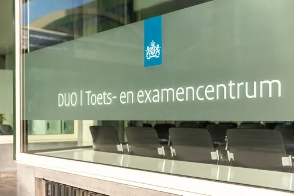

Inburgeringscursus: Alles wat je hierover moet weten
Gepubliceerd op 28 december 2022, bijgewerkt op 16 november 2023
Onderdeel van de gids Cursussen in Nijmegen

Wanneer je vanuit het buitenland in Nederland komt wonen voor langere tijd, ben je verplicht om een inburgeringscursus te volgen. Hierbij leer je de Nederlandse taal en hoe de Nederlandse samenleving in elkaar zit. Hierdoor kun je beter meekomen in de Nederlandse samenleving. Je kunt bijvoorbeeld makkelijker een opleiding volgen of hebt meer kans op werk. De inburgeringscursus is een voorwaarde voor een sterker verblijfsrecht en je hebt 3 jaar de tijd om in te burgeren.
Naturaliseren
Naturalisatie is het verkrijgen van de Nederlandse nationaliteit. Naturaliseren kan wanneer je 5 jaar wettig in Nederland woont. In sommige gevallen kan dit ook eerder, bijvoorbeeld als je in Nederland geboren bent. Naturalisatie tot Nederlander kun je aanvragen bij je eigen gemeente. Die stuurt je aanvraag door naar het IND en het IND neemt vervolgens de beslissing over de aanvraag. Deze beslissing duurt maximaal 12 maanden.
Voor wie is de inburgeringscursus?
Vluchtelingen moeten een verplicht inburgeringstraject volgen, tenzij zij aan de volgende voorwaarden voldoen:
- Indien je jonger bent dan 18 jaar;
- Indien je ouder bent dan de pensioengerechtigde leeftijd;
- Indien je tijdens de leerplichtige leeftijd 8 jaar of langer in Nederland hebt gewoond;
- Indien je tijdelijk naar Nederland komt voor werk of studie;
- Indien je in het bezit ben van een paspoort van een land binnen de Europese Unie. Of een paspoort van Liechtenstein, Noorwegen, IJsland of Zwitserland.
Wanneer je verplicht bent om in te burgeren, krijg je een brief van DUO. In deze brief staat wanneer je moet inburgeren. Het is ook mogelijk dat je al moet inburgeren vóórdat je naar Nederland komt. Bijvoorbeeld wanneer je trouwt met een Nederlander. Dit geldt niet voor gezinsleden van vluchtelingen met een asielvergunning.
Je kunt ook vrijwillig een inburgeringscursus volgen, wanneer je niet aan de voorwaarden voldoet. Bijvoorbeeld om de Nederlandse nationaliteit te kunnen verkrijgen of een sterkere verblijfsvergunning aan te vragen.
Waaruit bestaat de inburgeringscursus?
Vanaf januari 2022 wordt er voor de inburgering een toets afgenomen en een gesprek gevoerd, om te bepalen waar je niveau ligt. Dit is de leerbaarheidstoets (LBT). Na deze toets en het gesprek, wordt er een persoonlijk plan gemaakt (het Plan Inburgering en Participatie). Hierin staat welke cursus je moet volgen of het beste kunt volgen. Er bestaan 3 soorten cursussen, namelijk:
- Cursus Nederlands als tweede taal (Nt2)
- Inburgeringscursus
- Alfabetiseringscursus
Tijdens de cursus Nederlands als tweede taal (Nt2), krijg je alleen Nederlandse taalles. De inburgeringscursus, gaat een stukje verder en bestaat uit:
- Taalles om Nederlandse taal te kunnen begrijpen en spreken;
- Lessen om de Nederlandse Maatschappij te leren kennen;
- Lessen over arbeidsparticipatie
- Het Participatieverklaringstraject (PVT), waarbij je de Nederlandse kernwaarden leert kennen (vrijheid, gelijkwaardigheid, solidariteit en participatie) en verklaart deze te respecteren.
- Lessen Participatie
De alfabetiseringscursus is bedoeld voor mensen die niet goed kunnen lezen en schrijven. Je leert dan eerst lezen en schrijven. Daarnaast leer je Nederlands. Meestal moet je na afronding van de cursus nog een inburgeringscursus volgen.

Waar kan ik een inburgeringscursus volgen?
Wil je een inburgeringscursus volgen? Dan kun je het beste een school kiezen via www.zoekinburgerschool.nl. De scholen die op deze site staan hebben het Blik op Werk-keurmerk. Wanneer een school dit keurmerk heeft, kun je geld lenen van DUO. Voor andere scholen kunt je geen geld lenen. Enkele goede inburgeringsscholen in Nijmegen met keurmerk zijn:
- STEP-Inburgering
- EchtNederlands
- Nederlands de Baas
Voor deze scholen kun je dus geld lenen van DUO. Ook zijn ze alle drie te vinden in Nijmegen zelf en hoef je dus niet ver te reizen. Bij deze scholen krijg je klassikaal les, maar ook veel persoonlijke aandacht.
Hoeveel kost een inburgeringscursus?
Wanneer je asielstatushouder bent, dan betaalt de gemeente de cursus. Ook de eerste 2 pogingen voor alle examens worden vergoedt. Wanneer je geen asielstatushouder bent, moet je zelf de cursus en de examens betalen. Hiervoor kun je wel geld lenen van DUO, mits je cursusschool een Blik op Werk-keurmerk heeft. Hoeveel je kunt lenen, is afhankelijk van je inkomen. Met de rekenhulp kun je uitrekenen hoeveel je ongeveer kunt lenen, zie: https://www.inburgeren.nl/rekenhulp.jsp
Hoeveel de cursus kost, is afhankelijk van de school waar je de cursus volgt en hoeveel lesuren je nodig hebt. De gemiddelde inburgeraar heeft 500 lesuren nodig om alles te kunnen halen. Bij STEP bijvoorbeeld kost een lesuur 14,50. Als je dit vermenigvuldigd met 500 lesuren, zou je 7250 euro kwijt zijn. De examens kosten 50 euro per stuk. Je moet er 5 volgen, dus dat komt neer op 250 euro. De PVT is gratis. Om alle kosten goed op een rijtje te krijgen en te kunnen vergelijken tussen de inburgeringsscholen, kun je het beste bij de school zelf een offerte opvragen van de kosten.
Bronnen:
- https://www.nijmegen.nl/diensten/verhuizen/inburgeren/
- https://www.inburgeren.nl/u-gaat-inburgeren/index.jsp
- https://www.rijksoverheid.nl/onderwerpen/immigratie-naar-nederland/vraag-en-antwoord/moet-ik-als-nieuwkomer-inburgeren#:~:text=Of%20u%20bij%20langdurig%20verblijf,de%20Nederlandse%20samenleving%20leren%20kennen.
- https://www.vluchtelingenwerk.nl/nl/wat-wij-doen/begeleiding-bij-taal-en-inburgering/wat-inburgering
- https://www.rijksoverheid.nl/wetten-en-regelingen/productbeschrijvingen/naturalisatie-tot-nederlander-aanvragen
- https://www.inburgeren.nl/inburgeren-betalen/